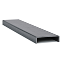
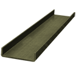
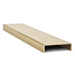
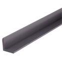
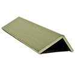
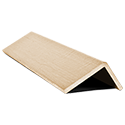

FRP Shapes
Harrington is a supplier of FRP shapes. FRP shapes are used in construction, architectural solutions, industrial applications, and other industries. Material types include FRP, IFR, IPE, and VFR. Select your product to request a quote, get additional information and purchasing options.

FRP Channel, (IFR) Isophthalic Polyester Fire Retardant, 5" x 1-3/8", 1/4" Thick, Slate Grayper FT · Sign in for price
FRP Channel, (IPE) Isophthalic Polyester Non-Flame Retardant, 5" x 1-3/8", 1/4" Thick, Olive Greenper FT · Sign in for price
FRP Channel, (VFR) Vinyl Ester Fire Retardant, 5" x 1-3/8", 1/4" Thick, Beigeper FT · Sign in for price- FRP Channel, (IFR) Isophthalic Polyester Fire Retardant, 5-1/2" x 1-1/2", 3/16" Thick, Slate Grayper FT · Sign in for price
- FRP Channel, (IPE) Isophthalic Polyester Non-Flame Retardant, 5-1/2" x 1-1/2", 3/16" Thick, Olive Greenper FT · Sign in for price
- FRP Channel, (VFR) Vinyl Ester Fire Retardant, 5-1/2" x 1-1/2", 3/16" Thick, Beigeper FT · Sign in for price
- FRP Channel, (IFR) Isophthalic Polyester Fire Retardant, 6" x 1-5/8", 1/4" Thick, Slate Grayper FT · Sign in for price
- FRP Channel, (IPE) Isophthalic Polyester Non-Flame Retardant, 6" x 1-5/8", 1/4" Thick, Olive Greenper FT · Sign in for price
- FRP Channel, (VFR) Vinyl Ester Fire Retardant, 6" x 1-5/8", 1/4" Thick, Beigeper FT · Sign in for price
- FRP Channel, (IFR) Isophthalic Polyester Fire Retardant, 6" x 1-11/16", 3/8" Thick, Slate Grayper FT · Sign in for price
- FRP Channel, (IPE) Isophthalic Polyester Non-Flame Retardant, 6" x 1-11/16", 3/8" Thick, Olive Greenper FT · Sign in for price
- FRP Channel, (VFR) Vinyl Ester Fire Retardant, 6" x 1-11/16", 3/8" Thick, Beigeper FT · Sign in for price
- FRP Channel, (IFR) Isophthalic Polyester Fire Retardant, 8" x 2-3/16", 1/4" Thick, Slate Grayper FT · Sign in for price
- FRP Channel, (IPE) Isophthalic Polyester Non-Flame Retardant, 8" x 2-3/16", 1/4" Thick, Olive Greenper FT · Sign in for price
- FRP Channel, (VFR) Vinyl Ester Fire Retardant, 8" x 2-3/16", 1/4" Thick, Beigeper FT · Sign in for price
- FRP Channel, (IFR) Isophthalic Polyester Fire Retardant, 8" x 2-3/16", 3/8" Thick, Slate Grayper FT · Sign in for price
- FRP Channel, (IPE) Isophthalic Polyester Non-Flame Retardant, 8" x 2-3/16", 3/8" Thick, Olive Greenper FT · Sign in for price

FRP Equal Leg Angle, (IFR) Isophthalic Polyester Fire Retardant, 1" x 1/8", Slate Grayper FT · Sign in for price
FRP Equal Leg Angle, (IPE) Isophthalic Polyester Non-Flame Retardant, 1" x 1/8", Olive Greenper FT · Sign in for price
FRP Equal Leg Angle, (VFR) Vinyl Ester Fire Retardant, 1" x 1/8", Beigeper FT · Sign in for price- FRP Equal Leg Angle, (IFR) Isophthalic Polyester Fire Retardant, 1-1/4" x 1/8", Slate Grayper FT · Sign in for price
- FRP Equal Leg Angle, (IPE) Isophthalic Polyester Non-Flame Retardant, 1-1/4" x 1/8", Olive Greenper FT · Sign in for price
- FRP Equal Leg Angle, (VFR) Vinyl Ester Fire Retardant, 1-1/4" x 1/8", Beigeper FT · Sign in for price
- FRP Equal Leg Angle, (IFR) Isophthalic Polyester Fire Retardant, 1-1/4" x 3/16", Slate Grayper FT · Sign in for price
- FRP Equal Leg Angle, (IPE) Isophthalic Polyester Non-Flame Retardant, 1-1/4" x 3/16", Olive Greenper FT · Sign in for price
- FRP Equal Leg Angle, (VFR) Vinyl Ester Fire Retardant, 1-1/4" x 3/16", Beigeper FT · Sign in for price
- FRP Equal Leg Angle, (IFR) Isophthalic Polyester Fire Retardant, 1-1/2" x 1/8", Slate Grayper FT · Sign in for price
- FRP Equal Leg Angle, (IPE) Isophthalic Polyester Non-Flame Retardant, 1-1/2" x 1/8", Olive Greenper FT · Sign in for price
- FRP Equal Leg Angle, (VFR) Vinyl Ester Fire Retardant, 1-1/2" x 1/8", Beigeper FT · Sign in for price
- FRP Equal Leg Angle, (IFR) Isophthalic Polyester Fire Retardant, 1-1/2" x 1/4", Slate Grayper FT · Sign in for price
- FRP Equal Leg Angle, (IPE) Isophthalic Polyester Non-Flame Retardant, 1-1/2" x 1/4", Olive Greenper FT · Sign in for price
- FRP Equal Leg Angle, (VFR) Vinyl Ester Fire Retardant, 1-1/2" x 1/4", Beigeper FT · Sign in for price
- FRP Equal Leg Angle, (IFR) Isophthalic Polyester Fire Retardant, 2" x 1/8", Slate Grayper FT · Sign in for price
- FRP Equal Leg Angle, (IPE) Isophthalic Polyester Non-Flame Retardant, 2" x 1/8", Olive Greenper FT · Sign in for price
- FRP Equal Leg Angle, (VFR) Vinyl Ester Fire Retardant, 2" x 1/8", Beigeper FT · Sign in for price
- FRP Equal Leg Angle, (IFR) Isophthalic Polyester Fire Retardant, 2" x 3/16", Slate Grayper FT · Sign in for price
- FRP Equal Leg Angle, (IPE) Isophthalic Polyester Non-Flame Retardant, 2" x 3/16", Olive Greenper FT · Sign in for price
- FRP Equal Leg Angle, (VFR) Vinyl Ester Fire Retardant, 2" x 3/16", Beigeper FT · Sign in for price
- FRP Equal Leg Angle, (IFR) Isophthalic Polyester Fire Retardant, 2" x 1/4", Slate Grayper FT · Sign in for price
- FRP Equal Leg Angle, (VFR) Vinyl Ester Fire Retardant, 2" x 1/4", Beigeper FT · Sign in for price